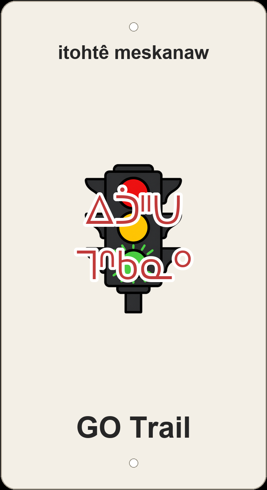

"go-on trail"

3D-printed Terwillegar sign with a screenprinted green GO traffic-signal light.
GO Trail is English stop-and-go before it is a ride: the sign screenprints a glowing green GO traffic-signal light, and the plaque carries that moment into nêhiyawêwin as itohtê meskanaw — 'go-on trail.' Itohtê (ee-toh-tay) is the Plains Cree root command 'go on,' the green-light counterpart to nakî 'stop'; paired with meskanaw 'trail,' the name is what you would say when the light turns green.
Two other renderings stay off the plaque but show how builders weighed the joke: âhkamê-meskanaw 'keep-going trail' pushes the encouragement sense of GO through âhkamêyi- 'persevere, keep going'; Kô meskanaw keeps the English acronym phonetically if GO is treated as a proper name rather than a command.
On the same Terwillegar hillside the nicknames answer each other: sibling climb GO Trail - alt climb (itohtê meskanaw amaciwêwin 'go-on trail climb') branches from the same green-light root; Flat Pete (Pît nâpakaskâw) and Flatter Pete (awasi-nâpakaskâw Pît) flatten the joke beside Dave's Trail (Têv omeskanaw), Upper Corkscrew (ispimihk wâwaniyâw meskanaw), Curvin Murvin (wâwani-meskanaw), Hyperloop (kayipî-wâsâkêwayiw), Dancing with the Trees (nîmihitom mistikwak wîcêwakan), Switchback Slicer (wâni-meskanaw kîskatahikêw), Logarythmic (mistiko-akihcikêwin), Oleskiw Meadow (Olêskîw maskosiskâw), and Terwillegar - 7 (Têrwiligar têpakohp).
Like every sign in this series, GO Trail sits on ᓀᐦᐃᔭᐤ ᐊᐢᑭᕀ Nêhiyaw-Askiy — Plains Cree territory, Treaty 6, and a homeland of the Métis Nation. These plaques are one way of putting nêhiyawêwin back on the land it was always spoken on.
A ~2 km Terwillegar line with about 54 m of climbing and 56 m of descent — a short up-and-down ribbon that earns its stop-and-go name. Tap through to Trailforks on the poster for the mapped line and rider reports.
Explore the trail on Trailforks, with a local preview from the uploaded GPX.
âhkamêyi- 'persevere, keep going' + meskanaw.
If 'GO' is a proper acronym, keep phonetic.
| English | SRO | Syllabics |
|---|---|---|
| go-on trail | itohtê meskanaw | ᐃᑑᐦᑌ ᒣᐢᑲᓇᐤ |
| keep-going trail | âhkamê-meskanaw | ᐋᐦᑲᒣ ᒣᐢᑲᓇᐤ |
| GO (phonetic) trail | Kô meskanaw | ᑰ ᒣᐢᑲᓇᐤ |
SRO uses ê î ô â. Syllabics match the SRO shown.
Dialectal preferences may affect minor spelling choices; check local norms for signage.
References: itwêwina, Online Cree Dictionary, Plains Cree Dictionary